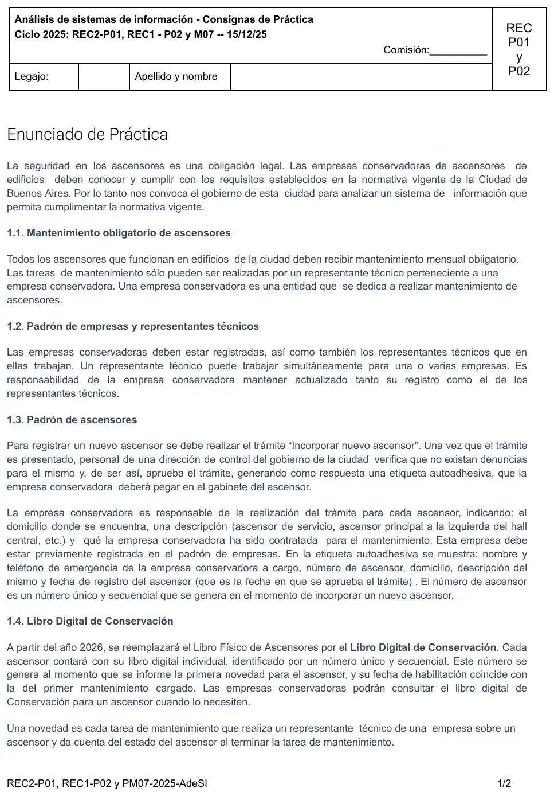
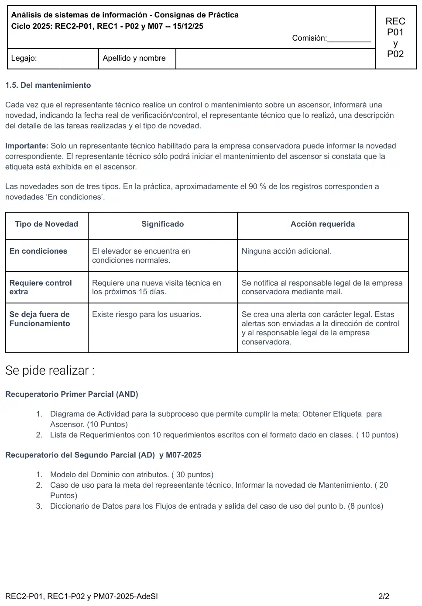

Final y recuperatorios, 15/12/2025. Ascensores
Final, 15/12/2025
Enunciado




Propuesta de respuesta
Respuesta no verificada. La propuso Luta Studios con inteligencia artificial y ningún docente la revisó. Puede tener errores.
Va todo lo que pide la hoja, para el recuperatorio del 1° parcial (AND) y para el del 2° parcial (AD) y la mesa M07. Cada uno hace solo los ítems de su instancia.
Recuperatorio del 1° parcial. 1. Diagrama de actividad
Solo el subproceso que cumple la meta Obtener etiqueta para ascensor. El relato no dice qué pasa si la empresa no está en el padrón o si hay denuncias, así que esas ramas terminan en flujo final.
Recuperatorio del 1° parcial. 2. Lista de requerimientos
Con la forma acción + objeto(s) + (para qué) + (para quién) + (comentarios imprescindibles).
| ID | Requerimiento |
|---|---|
R01 | Registrar empresa conservadora en el padrón de empresas, por parte de la empresa |
R02 | Registrar representante técnico habilitado para una o varias empresas conservadoras, por parte de cada empresa |
R03 | Registrar trámite «Incorporar nuevo ascensor» con domicilio, descripción y empresa conservadora contratada, por parte de la empresa |
R04 | Validar que la empresa conservadora esté registrada en el padrón, al presentar el trámite |
R05 | Informar denuncias registradas del ascensor, para que la dirección de control decida si aprueba el trámite |
R06 | Registrar aprobación del trámite con la fecha del día como fecha de registro del ascensor, por parte de la dirección de control |
R07 | Generar número de ascensor único y secuencial al incorporar un ascensor |
R08 | Emitir etiqueta autoadhesiva con nombre y teléfono de emergencia de la empresa, número de ascensor, domicilio, descripción y fecha de registro, para la empresa conservadora |
R09 | Registrar novedad de mantenimiento con fecha real de control, detalle de las tareas y tipo de novedad, por parte del representante técnico |
R10 | Validar que el representante técnico esté habilitado para la empresa conservadora del ascensor, al informar la novedad |
R11 | Notificar novedad «Requiere control extra» al responsable legal de la empresa conservadora, por mail |
R12 | Generar alerta de carácter legal con la novedad «Se deja fuera de funcionamiento», para la dirección de control y el responsable legal |
R13 | Mostrar libro digital de conservación de un ascensor, para la empresa conservadora |
Recuperatorio del 2° parcial y M07. 1. Modelo del dominio
Con el sufijo @ van los atributos que el relato no nombra pero hacen falta para identificar, como en la resolución del recuperatorio del 19/02/24. El libro digital se crea con la primera novedad y por eso es 0..1. Tocá el dibujo para verlo en pantalla completa.
Recuperatorio del 2° parcial y M07. 2. Caso de uso
CUU01 Informar novedad de mantenimiento
| Campo | Contenido |
|---|---|
| Dimensiones | Usuario, Sin estructurar, Sistema, Negra, Real, Semántica |
| Meta | Informar la novedad de mantenimiento |
| Actor primario | Representante técnico |
| Otros | Responsable legal de la empresa conservadora, dirección de control |
| Precondiciones de negocio | El representante técnico constató que la etiqueta está exhibida en el ascensor. |
| Precondiciones de sistema | Existen Ascensores. Existen EmpresasConservadoras con RepresentantesTecnicos habilitados. Existen TiposNovedad. |
| Disparador | El representante técnico terminó un control o mantenimiento sobre un ascensor. |
Camino básico
- Cuando el representante técnico terminó la tarea de mantenimiento, ingresa al Sistema el número de ascensor y su matrícula. Sistema valida que el representante esté habilitado para la empresa conservadora del ascensor e informa los datos del ascensor.
- Representante técnico ingresa la fecha real de verificación y el detalle de las tareas realizadas. Sistema informa los tipos de novedad.
- Representante técnico selecciona el tipo de novedad. Sistema registra la novedad en el libro digital del ascensor.
Caminos alternativos
1.a <durante>No existe el número de ascensor:1.a.1Sistema informa la situación. Continúa en paso 1.
1.b <durante>El representante técnico no está habilitado para la empresa conservadora del ascensor:1.b.1Sistema informa la situación. Fin CU.
3.a <previo>Es la primera novedad del ascensor:3.a.1Sistema genera el número del libro digital del ascensor.
3.b <posterior>La novedad es «Requiere control extra»:3.b.1Sistema notifica la novedad al responsable legal de la empresa conservadora por mail.
3.c <posterior>La novedad es «Se deja fuera de funcionamiento»:3.c.1Sistema genera una alerta de carácter legal y la envía a la dirección de control y al responsable legal.
Postcondiciones de sistema
- Éxito: Una nueva Novedad está registrada.
- Fracaso:
<vacío> - Éxito alternativo: Un nuevo LibroDigital está registrado (3.a). Una nueva Alerta está registrada (3.c).
Postcondiciones de negocio
- Éxito: La novedad de mantenimiento está informada.
- Fracaso: El representante técnico no está habilitado para la empresa (1.b).
- Éxito alternativo: El responsable legal fue notificado (3.b). La dirección de control y el responsable legal recibieron la alerta (3.c).
Reglas de negocio relacionadas con el caso de uso, con el paso y el tipo
1Solo un representante técnico habilitado para la empresa conservadora puede informar la novedad (restricción)3.aEl número del libro digital es único y secuencial y se genera con la primera novedad (cálculo)3.bSi la novedad requiere control extra, se notifica al responsable legal por mail (acción disparadora)3.cSi el ascensor se deja fuera de funcionamiento, se crea una alerta legal para la dirección de control y el responsable legal (acción disparadora)
Recuperatorio del 2° parcial y M07. 3. Diccionario de datos
Paso E/S Flujo
1 E identificacion = numeroAscensor + matricula
1 S datosAscensor = numeroAscensor + domicilio + descripcion + nombreEmpresa
2 E tareas = fechaVerificacion + detalleTareas
2 S tiposNovedad = 3{tipoNovedad(d)}3
2 S tipoNovedad(d) = ["En condiciones" | "Requiere control extra" | "Se deja fuera de funcionamiento"]
3 E novedadElegida = tipoNovedad(d)
1.a.1 S ascensorInexistente = numeroAscensor + mensaje(d)
1.b.1 S noHabilitado = matricula + nombreEmpresa + mensaje(d)
3.b.1 S mailControlExtra = mailResponsableLegal + numeroAscensor + domicilio + fechaVerificacion + detalleTareas
3.c.1 S alertaLegal = fecha + numeroAscensor + domicilio + nombreEmpresa + detalleTareasRespuesta no verificada. Puede tener errores.
Se armó con la página del 1° parcial (diagrama de actividad, objetos de negocio y lista de requerimientos) y la del 2° parcial (modelo del dominio, casos de uso, precondiciones, reglas de negocio y diccionario de datos). La forma del caso de uso sigue el CUU01 de la resolución del 2° parcial del 01/11/25.
Quedó en duda: El relato no dice cómo se identifican la empresa y el representante: van cuit@ y matricula@ como supuestos. La exhibición de la etiqueta se tomó como precondición de negocio, porque la constata el representante antes de empezar. No queda claro si el responsable legal es una clase aparte o datos de la empresa. Las denuncias se asociaron al ascensor aunque se verifican antes de registrarlo. La notación del diccionario sale de un resumen de alumno.
¿Cómo te fue?
Marcá cada tema del examen.
- Modelo del dominioModelo del dominio, en 2° parcial
- Caso de usoCasos de uso, en 2° parcial
- Diccionario de datosDiccionario de datos, en 2° parcial